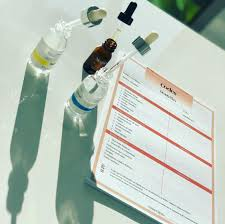
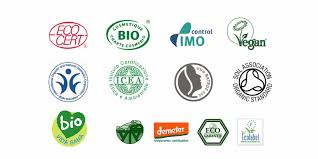
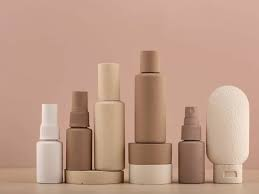
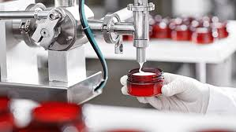

¿Buscas un laboratorio para la fabricación de cosmética?
¡Estás en el sitio indicado!
Contamos con una dilatada experiencia como fabricante y laboratorio de cosméticos a terceros.
Lumilab, investiga, desarrolla y fabrica una amplia gama de cosméticos: cosméticos sólidos, cremas solares, capilares, higiene corporal, facial.
Gracias a la unión de varios expertos podemos desarrollar cosméticos eficaces y sostenibles para otras marcas.
En Lumilab, estamos especializados en la creación de productos que cuidan de tu piel. Te ofrecemos un asesoramiento integral durante todo el proceso, desde la formulación; desarrollo, análisis para garantizar la seguridad hasta la elección del envase, para que tu producto esté listo para conquistar el merado. Nuestro compromiso con la calidad se refleja en cada paso de nuestra fabricación. Utilizamos ingrediente seguros, eficaces y de última tendencia. Por todo esto tenemos una amplia gama de productos cosméticos. Para cualquier duda contacta con nosotros.
¿Cómo podemos ayudarte en la fabricación de tu marca de cosmética?
Elaboración fórmula
En Lumilab formulamos el cosmético que desees, sin segir patrones, nos amoldamos tu idea
Seguimiento de la fórmula
Buscamos el cosméticoque más se adecue a tus necesidades, haciendo el seguimiento de tu producto.
Documentación legal
Gestionamos toda la documentación requerida según normativa europea.
Certificación
Si quieres certificar tu producto como vegano, natural u otro.
Diseño de packaging
Si quieres certificar tu producto como vegano, natural u otro.
Fabricaión la nueva marca
Realizados todos los pasos anetriores es hora de fabricar tu marca de cosmético.